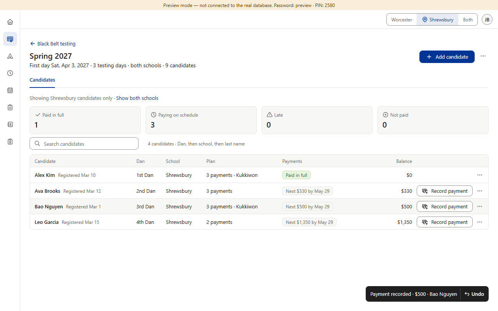
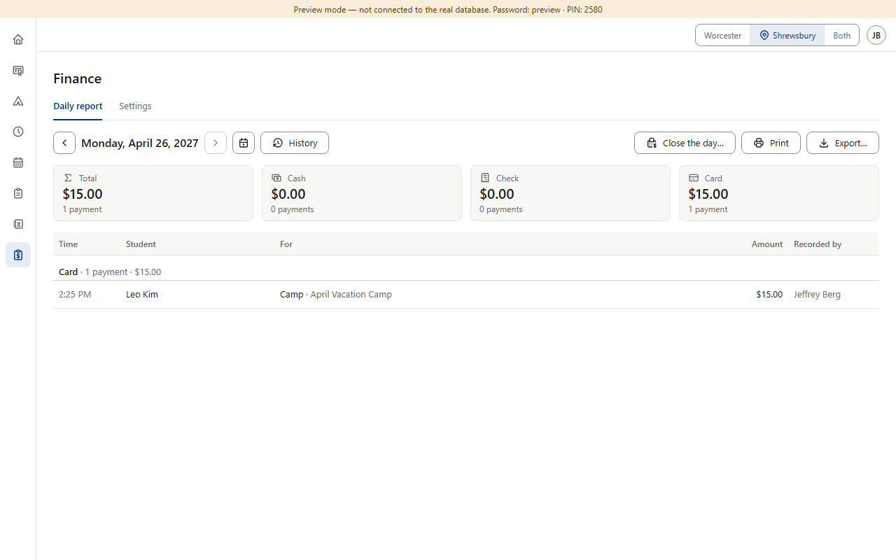
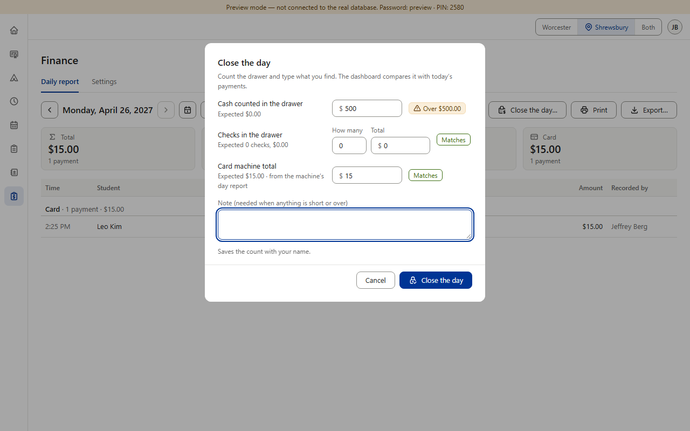
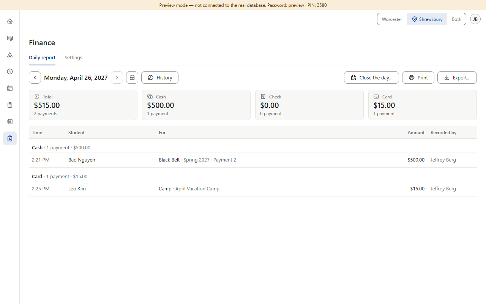
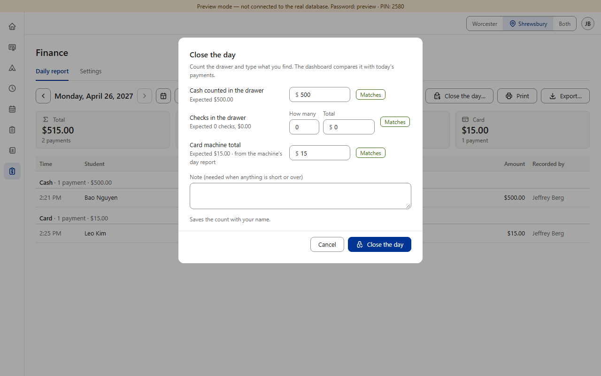

Item 1 · Black Belt money in Finance — planned, not built yet
Not a defect: this is planned work. Finance decided on Oct 19 (rulebook v0.808) to add Black Belt payments to the Daily report “once Black Belt payments exist” — it's in Finance's status file (§8, “Later: Black Belt payments”) and Black Belt's. Black Belt's payments went live Oct 21, so until Finance's step is built, a Black Belt payment taken at the desk won't show in that day's report. (Preview screenshots with the fake database · pretend date Mon, Apr 26, 2027 · Shrewsbury)
Today, until Finance's step is built

1. At the desk, Bao Nguyen pays his $500 Black Belt payment in cash. The roster takes it: “Payment recorded · $500 · Bao Nguyen”.

2. The same day in Finance: Total $15.00, Cash $0.00. Only a $15 camp card payment is listed. The $500 isn't there.

3. At closing, staff count $500 in the drawer. The dashboard expected $0.00, says “Over $500.00”, and makes them type a note explaining money it should already know about.
The payment is saved in Black Belt. It just doesn't reach Finance yet: not the Daily report, not History, not Close the day, not the CSV for the bookkeeper.
When it's built (mockup of rule v0.808)

4. The payment shows in Finance as “Black Belt · Spring 2027 · Payment 2”, on the day it was taken, and the Total and Cash cards include it.

5. At closing, the $500 counted matches what Finance expects. Nothing to explain.
Already decided. Rulebook v0.808 (Oct 19): the line “Black Belt · cycle · what it's for”, counted on the day it was taken; v0.809: a bounced check gets its own “Returned checks” group. Pictures 4 and 5 are drawn over the real page; nothing in the app was changed.
Owner: Finance (one database migration, listed in its status file §8). Decision: none needed — it's planned. Noted for the end of the walkthrough: Black Belt's payment screens went live before Finance reads them, so a Black Belt payment taken before Finance's step is built makes that day's count look over by the same amount. Tablet and phone: same screens, only the numbers change.